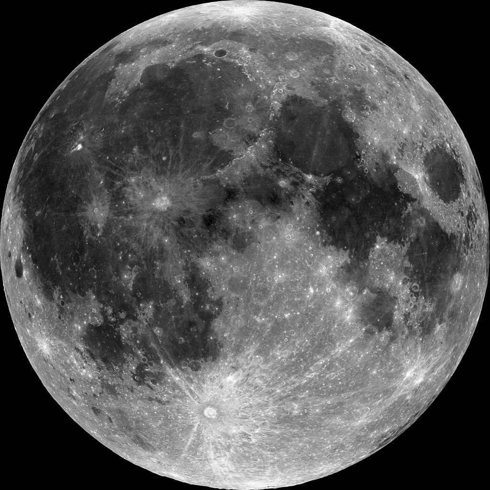
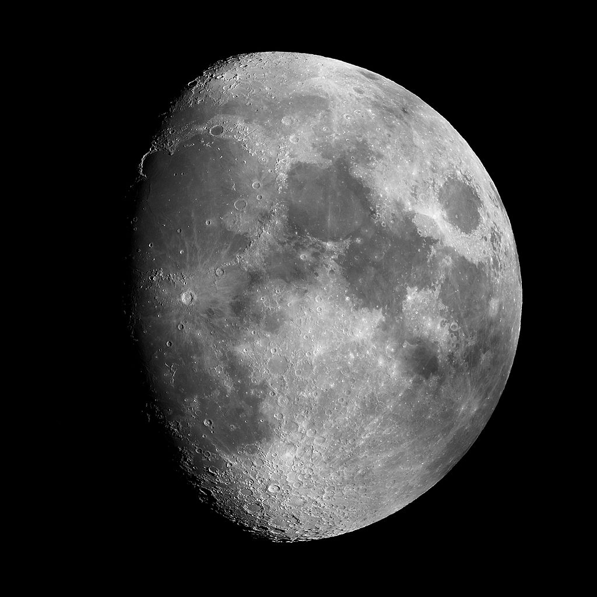
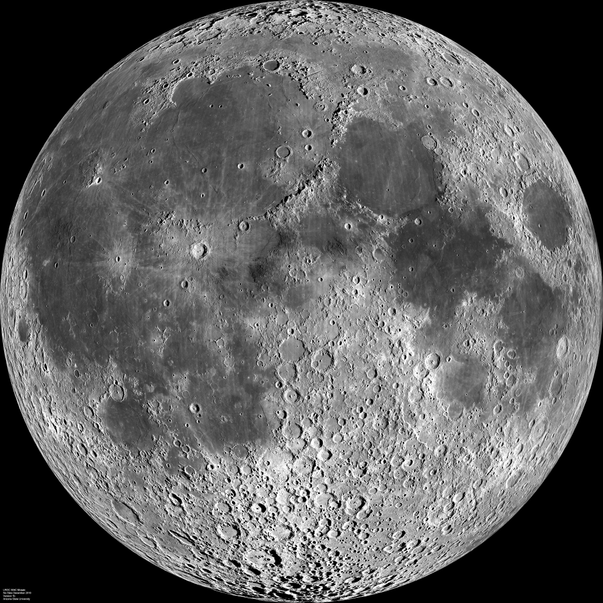
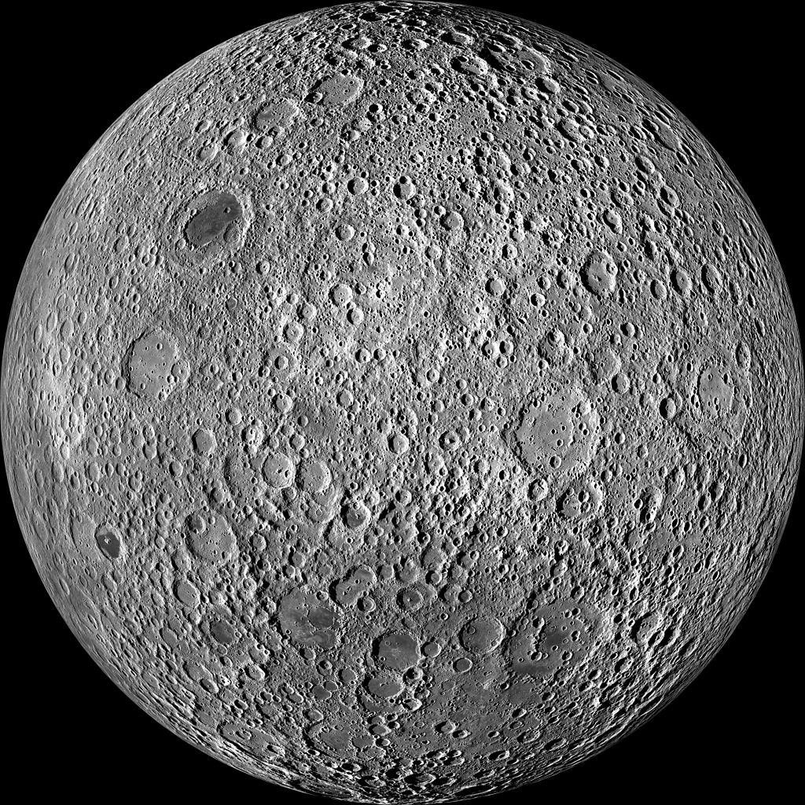
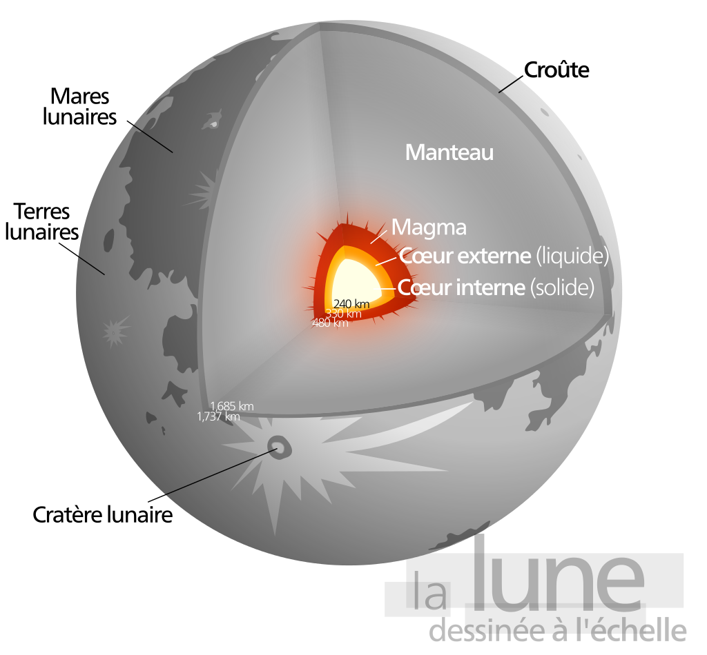
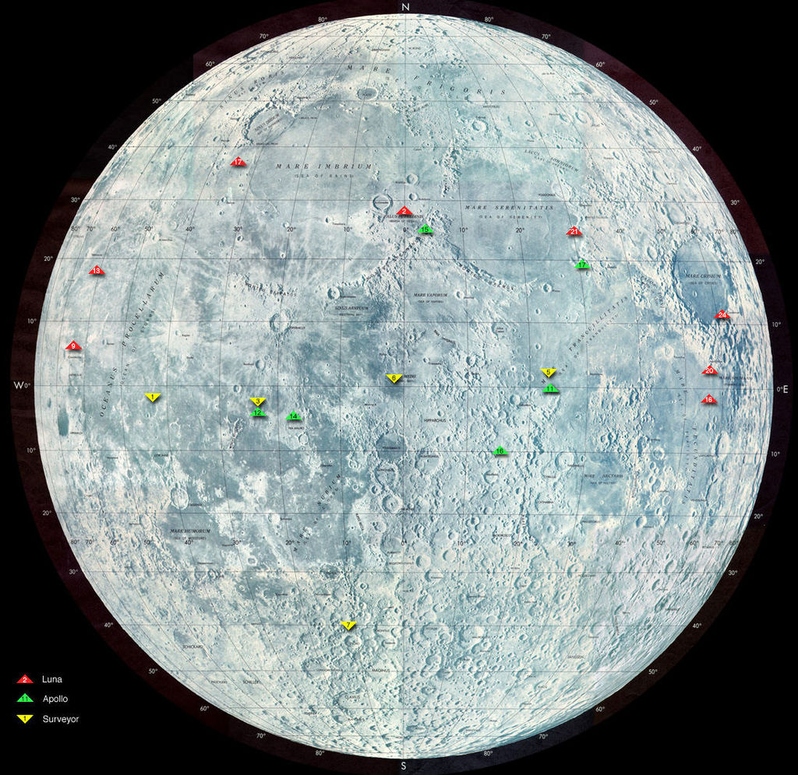

| La Lune est l'unique satellite de la Terre. Suivant la désignation systématique des satellites, la Lune est appelée Terre I ; cependant en pratique cette forme n'est pas utilisée. Elle est le cinquième plus grand satellite du Système solaire, avec un diamètre de 3 474 km. La distance moyenne séparant la Terre de la Lune est de 381 500 km.La Lune est le premier et le seul objet non terrestre visité par l'Homme. Le premier à y avoir marché est l'astronaute américain Neil Armstrong le 21 juillet 1969. Après lui, onze autres hommes ont foulé le sol de la Lune, tous membres du programme Apollo. |
 |
|
|
|
|
La longueur du demi grand axe entre la Lune et la Terre est de 384 399 km. Le diamètre moyen de la Lune est de 3 474 km. La force qu’exerce la Terre sur la Lune est d'environ 1,95 ×10e20 newtons.
Parmi les influences les plus connues, des plus réelles aux plus romantiques, citons :
| Dans la représentation la plus simple, on peut dire que la Lune a une orbite elliptique autour du centre de la Terre (conformément aux lois de Kepler), qui lui-même tourne autour du Soleil. Pour être plus précis, on peut résoudre le problème à deux corps, ce qui permet de montrer que la Terre et la Lune orbitent en fait autour du barycentre du système double, qui lui-même tourne autour du Soleil, l’influence gravitationnelle perturbatrice du Soleil étant faible par rapport à leur interaction mutuelle10. Comme ce barycentre se trouve à l’intérieur de la Terre, à environ 4 700 kilomètres de son centre, le mouvement de la Terre est généralement décrit comme une « oscillation », et le système Terre-Lune est donc le plus souvent considéré comme un système planète-satellite plutôt qu'une planète double, bien que ce dernier statut tende à devenir plus courant ces dernières années et a même été considéré ainsi (au moins pendant un temps) par l'Agence spatiale européenne. |
 |
| La période de rotation de la Lune est la même que sa période orbitale et elle présente donc toujours le même hémisphère (nommé « face visible de la Lune ») à un observateur terrestre (l'autre hémisphère est donc appelé « face cachée de la Lune »). Cette rotation synchrone résulte des frottements qu’ont entraînés les marées causées par la Terre à la Lune, et qui ont progressivement amené la Lune à ralentir sa rotation sur elle-même, jusqu’à ce que la période de ce mouvement coïncide avec celle de la révolution de la Lune autour de la Terre. Actuellement les effets de marée de la Lune sur la Terre ralentissent la rotation de cette dernière et provoquent un léger éloignement des deux astres d'environ 3,78 cm par année. Du fait de cet éloignement et du ralentissement qui fait que la durée du jour terrestre augmente de 15 μs par an, la Lune à sa naissance orbitait à une distance 2 fois moindre qu'aujourd'hui et la Terre tournait alors sur elle-même en 6 heures. |
  |
Les points où l’orbite de la Lune croise l’écliptique (plan orbital de la Terre) s’appellent les « nœuds » lunaires : le nœud ascendant est celui où la * Lune passe vers le nord de l’écliptique et le nœud descendant est celui où elle passe vers le sud.
Le plan de l’orbite lunaire est incliné en moyenne de 5,145 396 degrés par rapport à l’écliptique. Cette inclinaison varie entre 5 degrés et 5,28 degrés selon un cycle de 173 jours (la moitié d'une année draconitique).Le plan de rotation de la Lune subit une précession d’une période de 6 793,5 jours (18,5996 années). Cette précession est provoquée par la gravitation du Soleil et, dans une moindre mesure, par le bourrelet équatorial de la Terre. Comme la Terre est elle-même inclinée de 23,45 degrés par rapport à l’écliptique, l’inclinaison du plan orbital lunaire par rapport à l’équateur terrestre varie entre 28,72 degrés et 18,16 degrés. Enfin, l’inclinaison de la Terre varie de 0,002 56 degrés de part et d’autre de sa valeur moyenne, ce qu’on appelle la nutation, mise en évidence pour la première fois par James Bradley en 1748 (voir aussi Librations en latitude).
L’origine de la Lune est au cœur d’un débat scientifique. Plusieurs modèles de formation ont été historiquement évoqués:
Mais aucune de ces théories ne parvient à expliquer simultanément un certain nombre d'observations qui se sont accumulées durant le XXe siècle :
|
On considère aujourd’hui que la Lune est un corps différencié : sa structure en profondeur n’est pas homogène mais résulte d’un processus de refroidissement, de cristallisation du magma originel, et de migration du magma évolué. Cette différenciation a résulté en une croûte (en surface) et un noyau (en profondeur), entre lesquels se trouve le manteau. Cette structure ressemble fortement à ce que l'on trouve pour l'intérieur de la Terre, aux dimensions absolues et relatives près, et surtout à la différence essentielle que la Lune est désormais devenue très « froide »; et n’est plus active comme l’est encore la Terre (convection, tectonique, etc.). |
 |
|
Le premier objet fabriqué par l’homme à atteindre la Lune fut la sonde soviétique Luna 2, qui s’y écrasa le 14 septembre 1959 à 21:02:24 Z. L'année 2009 marque l'anniversaire des premières photographies de la face cachée de la Lune envoyées de l'espace pour la première fois le 7 octobre 1959 lorsque la sonde automatique Luna 3, également lancée par l’Union soviétique, passa derrière la Lune. Luna 9 fut la première sonde à se poser sur la Lune (plutôt que de s’y écraser) ; elle retourna des photographies de la surface lunaire le 3 février 1966. Le premier satellite artificiel de la Lune fut la sonde soviétique Luna 10, lancée le 31 mars 1966. Le 17 novembre 1970, Lunokhod 1 fut le premier véhicule robotisé à explorer sa surface. |
|  |
Le 24 décembre 1968, les membres de l’équipage d’Apollo 8 (Frank Borman, James Lovell, et William Anders) furent les premiers humains à apercevoir directement la face cachée de la Lune. Les premiers humains à se poser sur la Lune le firent le 21 juillet 1969. Ce fut le point culminant de la course spatiale engagée entre les États-Unis et l’URSS, alors en pleine Guerre froide. Le premier astronaute à poser le pied sur la Lune fut Neil Armstrong, le capitaine de la mission Apollo 11, et le second, Buzz Aldrin, le même jour. Les derniers hommes à marcher sur le sol lunaire furent le scientifique Harrison Schmitt et finalement l’astronaute Eugene Cernan, lors de la mission Apollo 17 en décembre 1972. Au total au XXe siècle et jusqu'à nos jours, 24 hommes orbitèrent autour de la Lune et 12 d'entre eux marchèrent sur celle-ci.
À la fin des années 1990, les sondes Clémentine et Lunar Prospector ont trouvé des indices de présence d’eau sur la Lune.La sonde européenne SMART-1 s’est insérée en orbite autour de la Lune avec succès le 16 novembre 2004, elle doit trouver de l’eau et permettre de mieux déterminer l’origine de notre satellite (par calcul du taux de fer), grâce à une analyse étendue par des rayons X.Récemment, l’agence spatiale chinoise (CNSA) a dévoilé son plan lunaire qui est fondé en 3 étapes :
Bien qu’ils aient planté symboliquement à plusieurs reprises leur drapeau sur le sol lunaire, les Américains n’ont jamais émis de revendication territoriale sur aucune portion de surface de la Lune. Elle est considérée, grâce au traité de l'espace entré en vigueur le 10 octobre 1967, comme un espace international au même titre que les eaux du même nom. Le traité exclut de plus toute utilisation militaire de l’espace, en particulier le déploiement d’armes non conventionnelles.
Le traité lunaire de 1979 n’ayant pas été ratifié par les grandes nations de l’exploration spatiale, l’appropriation dans des buts économiques et commerciaux par des privés reste dans le flou juridique, ce qui entraîne parfois des revendications des plus fantaisistes. Ainsi, en 1953, l’avocat chilien Jenaro Gajardo Vera (en) enregistra la propriété de la Lune en payant 42 000 pesos de l’époque. On a officialisé l’écriture le 25 septembre 1954 dans le Conservateur des Biens Racines de la ville de Talca.
La face cachée de la Lune a été explorée uniquement par photographie depuis des sondes spatiales, la première ayant été Luna 3, en 1959. Le 16 juillet 2015, un satellite de la NASA a révélé des photographies de la face cachée de la Lune. L'animation accélérée proposée par l'Agence Spatiale dure quelques secondes alors que le passage de la Lune devant la Terre dure en réalité près de cinq heures. Les clichés ont été pris par le satellite DSCOVR en orbite à 1,5 millions de kilomètres de la Terre en direction du Soleil.
sSi vous voulez retourner en haut de la page, cliquez ici.